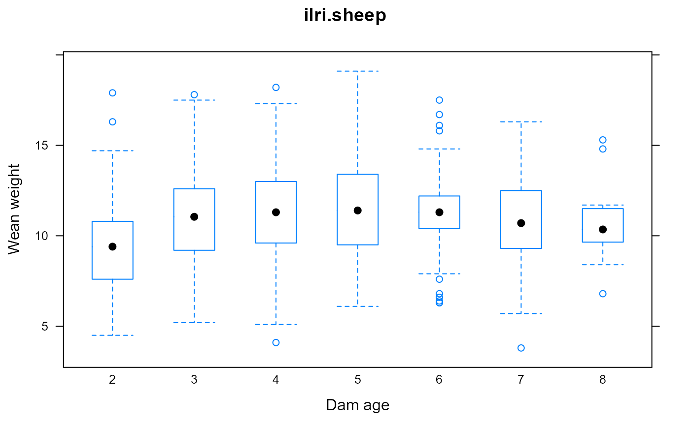
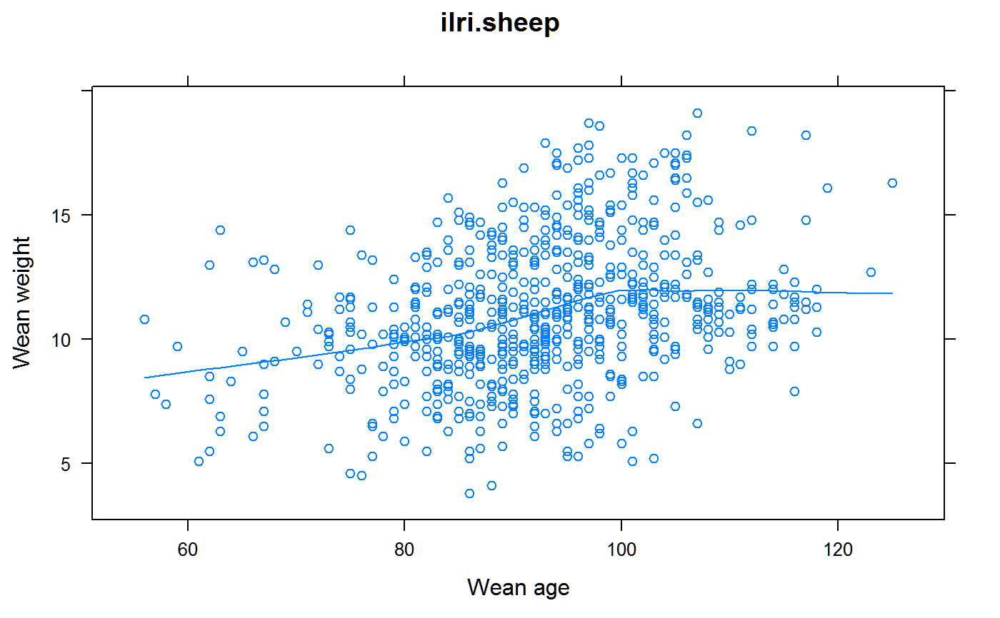

ilri.sheep.RdBirth weight and weaning weight of 882 lambs from a partial diallel cross of Dorper and Red Maasi breeds.
A data frame with 882 observations on the following 12 variables.
yearyear of lamb birth, 1991-1996
lamblamb id
sexsex of lamb, M=Male/F=Female
gengenotype, DD, DR, RD, RR
birthwtweight of lamb at birth, kg
weanwtweight of lamb at weaning, kg
weanageage of lamb at weaning, days
eweewe id
ewegenewe genotype: D, R
damageewe (dam) age in years
ramram id
ramgenram genotype: D, R
Red Maasai sheep in East Africa are perceived to be resistant to certain parasites. ILRI decided in 1990 to investigate the degree of resistance exhibited by this Red Maasai breed and initiated a study in Kenya. A susceptible breed, the Dorper, was chosen to provide a direct comparison with the Red Maasai. The Dorper is well-adapted to this area and is also larger than the Red Maasai, and this makes these sheep attractive to farmers.
Throughout six years from 1991 to 1996 Dorper (D), Red Maasai (R) and Red Maasai x Dorper crossed ewes were mated to Red Maasai and Dorper rams to produce a number of different lamb genotypes. For the purposes of this example, only the following four offspring genotypes are considered (Sire x Dam): D x D, D x R, R x D and R x R.
Records are missing in 182 of the lambs, mostly because of earlier death.
Mixed model analysis for the estimation of components of genetic variation in lamb weaning weight. International Livestock Research Institute. Permanent link: https://hdl.handle.net/10568/10364 https://biometrics.ilri.org/CS/case Retrieved Dec 2011.
Licensed with Creative Commons BY-NC-SA 3.0 Unported license.
Baker, RL and Nagda, S. and Rodriguez-Zas, SL and Southey, BR and Audho, JO and Aduda, EO and Thorpe, W. (2003). Resistance and resilience to gastro-intestinal nematode parasites and relationships with productivity of Red Maasai, Dorper and Red Maasai x Dorper crossbred lambs in the sub-humid tropics. Animal Science, 76, 119-136. https://doi.org/10.1017/S1357729800053388
Gota Morota, Hao Cheng, Dianne Cook, Emi Tanaka (2021). ASAS-NANP SYMPOSIUM: prospects for interactive and dynamic graphics in the era of data-rich animal science. Journal of Animal Science, Volume 99, Issue 2, February 2021, skaa402. https://doi.org/10.1093/jas/skaa402
# \dontrun{
library(agridat)
data(ilri.sheep)
dat <- ilri.sheep
dat <- transform(dat, lamb=factor(lamb), ewe=factor(ewe), ram=factor(ram),
year=factor(year))
# dl is linear covariate, same as damage, but truncated to [2,8]
dat <- within(dat, {
dl <- damage
dl <- ifelse(dl < 3, 2, dl)
dl <- ifelse(dl > 7, 8, dl)
dq <- dl^2
})
dat <- subset(dat, !is.na(weanage))
# EDA
libs(lattice)
## bwplot(weanwt ~ year, dat, main="ilri.sheep", xlab="year", ylab="Wean weight",
## panel=panel.violin) # Year effect
bwplot(weanwt ~ factor(dl), dat,
main="ilri.sheep", xlab="Dam age", ylab="Wean weight") # Dam age effect

# bwplot(weanwt ~ gen, dat,
# main="ilri.sheep", xlab="Genotype", ylab="Wean weight") # Genotype differences
xyplot(weanwt ~ weanage, dat, type=c('p','smooth'),
main="ilri.sheep", xlab="Wean age", ylab="Wean weight") # Age covariate

# case study page 4.18
lm1 <- lm(weanwt ~ year + sex + weanage + dl + dq + ewegen + ramgen, data=dat)
summary(lm1)
#>
#> Call:
#> lm(formula = weanwt ~ year + sex + weanage + dl + dq + ewegen +
#> ramgen, data = dat)
#>
#> Residuals:
#> Min 1Q Median 3Q Max
#> -7.4037 -1.3274 -0.0109 1.4403 7.7063
#>
#> Coefficients:
#> Estimate Std. Error t value Pr(>|t|)
#> (Intercept) 0.274005 1.065133 0.257 0.79706
#> year92 -1.565831 0.292949 -5.345 1.23e-07 ***
#> year93 -1.095781 0.275268 -3.981 7.60e-05 ***
#> year94 -2.832501 0.357504 -7.923 9.34e-15 ***
#> year95 -3.228367 0.343630 -9.395 < 2e-16 ***
#> year96 -2.351101 0.389751 -6.032 2.64e-09 ***
#> sexM 0.477910 0.169498 2.820 0.00495 **
#> weanage 0.070217 0.008856 7.928 8.97e-15 ***
#> dl 2.726355 0.315012 8.655 < 2e-16 ***
#> dq -0.268882 0.034007 -7.907 1.05e-14 ***
#> ewegenR -0.585536 0.236554 -2.475 0.01355 *
#> ramgenR -0.442866 0.172768 -2.563 0.01058 *
#> ---
#> Signif. codes: 0 '***' 0.001 '**' 0.01 '*' 0.05 '.' 0.1 ' ' 1
#>
#> Residual standard error: 2.221 on 688 degrees of freedom
#> (7 observations deleted due to missingness)
#> Multiple R-squared: 0.3835, Adjusted R-squared: 0.3736
#> F-statistic: 38.9 on 11 and 688 DF, p-value: < 2.2e-16
#>
anova(lm1)
#> Analysis of Variance Table
#>
#> Response: weanwt
#> Df Sum Sq Mean Sq F value Pr(>F)
#> year 5 1208.1 241.63 48.9853 < 2.2e-16 ***
#> sex 1 56.0 55.98 11.3494 0.0007968 ***
#> weanage 1 344.2 344.21 69.7804 3.651e-16 ***
#> dl 1 151.5 151.51 30.7160 4.258e-08 ***
#> dq 1 275.8 275.79 55.9115 2.316e-13 ***
#> ewegen 1 42.7 42.69 8.6548 0.0033717 **
#> ramgen 1 32.4 32.41 6.5708 0.0105780 *
#> Residuals 688 3393.7 4.93
#> ---
#> Signif. codes: 0 '***' 0.001 '**' 0.01 '*' 0.05 '.' 0.1 ' ' 1
# ----------
libs(lme4)
#>
#> Attaching package: 'lme4'
#> The following object is masked from 'package:nlme':
#>
#> lmList
lme1 <- lmer(weanwt ~ year + sex + weanage + dl + dq + ewegen + ramgen +
(1|ewe) + (1|ram), data=dat)
print(lme1, corr=FALSE)
#> Linear mixed model fit by REML ['lmerMod']
#> Formula: weanwt ~ year + sex + weanage + dl + dq + ewegen + ramgen + (1 |
#> ewe) + (1 | ram)
#> Data: dat
#> REML criterion at convergence: 3081.555
#> Random effects:
#> Groups Name Std.Dev.
#> ewe (Intercept) 1.207
#> ram (Intercept) 0.258
#> Residual 1.851
#> Number of obs: 700, groups: ewe, 358; ram, 74
#> Fixed Effects:
#> (Intercept) year92 year93 year94 year95 year96
#> 0.18579 -1.57090 -1.07663 -3.00251 -3.28832 -2.45008
#> sexM weanage dl dq ewegenR ramgenR
#> 0.40381 0.06593 2.92232 -0.28997 -0.45429 -0.41304
lme2 <- lmer(weanwt ~ year + sex + weanage + dl + dq + ewegen + ramgen +
(1|ewe), data=dat)
lme3 <- lmer(weanwt ~ year + sex + weanage + dl + dq + ewegen + ramgen +
(1|ram), data=dat)
anova(lme1, lme2, lme3)
#> refitting model(s) with ML (instead of REML)
#> Data: dat
#> Models:
#> lme2: weanwt ~ year + sex + weanage + dl + dq + ewegen + ramgen + (1 | ewe)
#> lme3: weanwt ~ year + sex + weanage + dl + dq + ewegen + ramgen + (1 | ram)
#> lme1: weanwt ~ year + sex + weanage + dl + dq + ewegen + ramgen + (1 | ewe) + (1 | ram)
#> npar AIC BIC logLik deviance Chisq Df Pr(>Chisq)
#> lme2 14 3081.0 3144.7 -1526.5 3053.0
#> lme3 14 3119.4 3183.1 -1545.7 3091.4 0.000 0
#> lme1 15 3082.6 3150.9 -1526.3 3052.6 38.735 1 4.853e-10 ***
#> ---
#> Signif. codes: 0 '***' 0.001 '**' 0.01 '*' 0.05 '.' 0.1 ' ' 1
# ----------
libs(asreml,lucid)
# case study page 4.20
m1 <- asreml(weanwt ~ year + sex + weanage + dl + dq + ramgen + ewegen,
data=dat)
#> Model fitted using the gamma parameterization.
#> ASReml 4.1.0 Fri Dec 17 15:17:37 2021
#> LogLik Sigma2 DF wall cpu
#> 1 -927.900 4.93270 688 15:17:37 0.0
# wald(m1)
# case study page 4.26
m2 <- asreml(weanwt ~ year + sex + weanage + dl + dq + ramgen + ewegen,
random = ~ ram + ewe, data=dat)
#> Model fitted using the gamma parameterization.
#> ASReml 4.1.0 Fri Dec 17 15:17:37 2021
#> LogLik Sigma2 DF wall cpu
#> 1 -920.939 4.16476 688 15:17:38 0.0
#> 2 -914.393 3.95256 688 15:17:38 0.0
#> 3 -909.836 3.69363 688 15:17:38 0.0
#> 4 -908.663 3.51028 688 15:17:38 0.0
#> 5 -908.548 3.43112 688 15:17:38 0.0
#> 6 -908.548 3.42731 688 15:17:38 0.0
# wald(m2)
# case study page 4.37, year means
# predict(m2, data=dat, classify="year")
## year predicted.value standard.error est.status
## 1 91 12.638564 0.2363652 Estimable
## 2 92 11.067659 0.2285252 Estimable
## 3 93 11.561932 0.1809891 Estimable
## 4 94 9.636058 0.2505478 Estimable
## 5 95 9.350247 0.2346849 Estimable
## 6 96 10.188482 0.2755387 Estimable
# }